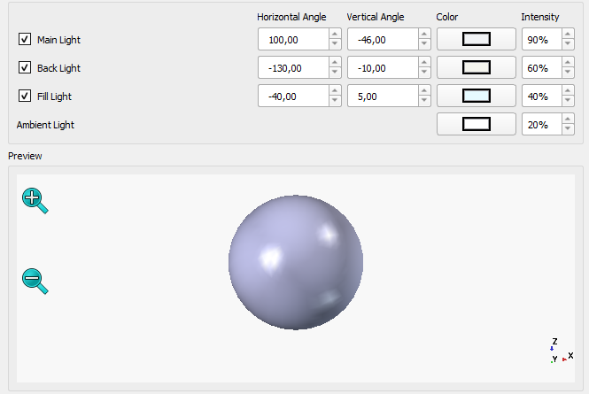

Release notes 1.1/it
FreeCAD 1.1 è in fase di sviluppo, non è ancora prevista una data di rilascio.
Mancano funzionalità? Menzionarle nel thread del forum Release notes for v1.1.
Vedere Help FreeCAD per le modalità con cui contribuire a FreeCAD.
Tutte le immagini in questa pagina devono utilizzare il suffisso _relnotes_1.1
FreeCAD 1.1 è stato rilasciato il D Mese Anno, scaricarlo dalla pagina Download. Questa pagina elenca tutte le nuove funzionalità e modifiche.
Le note di rilascio delle versioni precedenti di FreeCAD sono disponibili alla pagina Funzionalità.
Segnaposto per un'immagine accattivante selezionata dagli amministratori dal forum delle vetrine degli utenti.
Aspetti generali
Interfaccia utente
|  | È stata aggiunta l'illuminazione a tre punti per migliorare il rendering dei modelli 3D. |
{kind=link}

|
Search bar was added to the Preferences Editor. |
Ulteriori miglioramenti dell'interfaccia utente
- È stata aggiunta una scorciatoia predefinita per le Preferenze. Pull request #15536
- La pagina delle preferenze dell'area di notifica è stata migliorata. Pull request #15207
- Le funzionalità di salvataggio automatico e selezione additiva sono state aggiunte allo strumento Misurare. Pull request #17717
- È stato aggiunto un parametro "ToggleTransparency" fine-tuning per consentire agli utenti di modificare il livello di trasparenza predefinito abilitato dallo strumento Attiva/disattiva trasparenza. Pull request #18986
- È stata aggiunta la proprietà della vista "Mostra piano" per visualizzare il piano su cui si basa un oggetto 2D. Pull request #18910
- Ora è possibile cambiare il colore degli assi del sistema di coordinate utilizzando le nuove preferenze in Modifica → Preferenze... → Visualizzazione → Vista 3D. Pull request #16995
- È stata aggiunta la proprietà della vista "Mostra posizionamento" per visualizzare il posizionamento come sistema di coordinate all'origine di un oggetto 2D. Pull request #19671
- È stato aggiunto lo stile di navigazione di SolidWorks. Pull request #19568
Sistema principale e API
Sistema principale

|
È stato implementato uno strumento Core Datum per creare sistemi di coordinate locali, piani, assi o punti di Riferimento che possono essere associati e utilizzati anche in Assembly. |
 Clicca sull'immagine se l'animazione non si avvia. |
Lo strumento Trasforma è stato revisionato e ora consente input precisi oltre al trascinamento nella vista 3D. È possibile allineare il trascinatore interattivo a qualsiasi elemento del documento e trasformare l'oggetto nel sistema di coordinate locali (U, V, W) del trascinatore o nel sistema di coordinate globale del documento. Il trascinatore può essere allineato all'origine dell'oggetto come in precedenza, e anche al centro di massa dell'oggetto. Ha una nuova funzionalità per spostare l'oggetto (nella posizione del trascinatore) in una posizione di destinazione nel documento e invertire l'orientamento. Vedere tutte le nuove opzioni. |
 Click on the image if the animation does not start. |
Advanced options for axis-specific alignment of the Move to other object command in the |
API
Python API rimosse
API Python modificate
Nuove API Python
Start
- La pagina iniziale può ora visualizzare il contenuto di cartelle aggiuntive specificate dall'utente. I loro percorsi devono essere separati da doppi punti e virgola (
;;). Pull request #19473, Pull request #19918 e Pull request #19948. - La sezione Esempi nella pagina iniziale può essere nascosta con un'impostazione nelle preferenze. Pull request #19376 e Pull request #19918.
Addon Manager
- L'aggiornamento delle dipendenze Python ora funziona correttamente se FreeCAD è installato come pacchetto snap o come AppImage. Pull request #19384, Pull request #19766 e Pull request #19814.
- Il percorso di installazione dei moduli Python nell'aggiornamento delle dipendenze è ora mostrato come percorso assoluto per una migliore leggibilità. È anche mostrato correttamente in base al metodo di installazione di FreeCAD. Pull request #19828 e Pull request #19816.
Ambiente Assembly
- È stato aggiunto lo strumento Inserisci nuova parte che rende possibile aggiungere facilmente nuove parti all'assieme. Pull request #17922
- È stato aggiunto lo strumento Crea Simulazione che consente di aggiungere movimenti ai giunti e creare animazioni. Pull request #16414
Ulteriori miglioramenti di Assembly
- I nuovi core datums possono essere utilizzati per associre giunti per assemblare più parti. Pull request #18332
Ambiente BIM
Ulteriori miglioramenti di BIM
- Il pannello BIM_Views è stato revisionato e ora dispone di una sezione per tutte le viste 2D. Pull request #15836
- Il supporto IFC nativo per oggetti 2D è stato aggiunto al BIM, consentendo di incorporare oggetti 2D (linee, testi, dimensioni) all'interno di file IFC, nonché di aprire tali file da altre app BIM. Pull request #16629
- La finestra di dialogo Schedule ha ottenuto il supporto per array semplici (ad esempio non annidati). Ciò consente l'elaborazione di array regolari e di collegamento (sia espansi che non espansi) per ulteriori calcoli nel report di pianificazione BIM. Pull request #19219
Ambiente CAM

|
CAM Tool Management was replaced with Better Tool Library integration introducing a new toolbit editor and selector. |
Ulteriori miglioramenti di CAM
- Sono state aggiunte le operazioni di maschiatura G84/G74. Pull request #8069
- È stato aggiunto il supporto multi-pass per le operazioni sui profili. Pull request #17326
Ambiente Draft
- Il supporto per i percorsi relativi dei font è stato aggiunto a Forma da testo. Pull request #17819
- La gestione dei collegamenti in TechDraw Viste di Draft è stata corretta. Pull request #18175 e Pull request #19296
- La modalità di estrusione del comando Draft Taglia/Estendi è stata resa "link-aware". Ora può gestire facce appartenenti a Collegamenti e oggetti in contenitori collegati. Ed il punto che definisce l'estrusione può essere complanare alla faccia. Pull request #18314 e Pull request #18320
- Anche i comandi Sposta, Ruota e Scala sono stati resi "link-aware". Pull request #18795
- Se un Lega facce basato su facce connesse viene estruso, viene effettuato un tentativo di chiuderne gli angoli. A questo scopo la proprietà Cuci dell'oggetto deve essere impostata su true. Tenere presente che il codice può fallire per forme complesse. Pull request #18901
- Le Serie su tracciato sono state migliorate con diverse nuove proprietà. Ora è possibile invertire la serie, specificare un'unità di spaziatura fissa e utilizzare modelli di spaziatura. Pull request #19017
- Gli oggetti dentro layers ora possono avere sostituzioni. Pull request #19207
- È stato aggiunto il comando Draft Aggiungi al layer, per posizionare rapidamente gli oggetti nel layer corretto. Pull request #19427
- Il codice TechDraw su cui si basa Draft Tratteggio è stato rivisto per gestire anche le linee tratteggiate nei modelli di tratteggio. Pull request #19458
- I comandi Draft Declassa e Draft Promuovi sono stati aggiornati. Le Serie possono essere declassate ("esplose") e i nuovi oggetti vengono inseriti in uno stesso contenitore (Gruppo, Part) degli oggetti originali e ricevono anche le proprietà visive degli oggetti originali. Pull request #19487 e Pull request #19685
Ulteriori miglioramenti di Draft
- Il comando Draft Raccordo ora funziona sui bordi selezionati, anziché sul primo bordo degli oggetti selezionati. Pull request #17945 e Pull request #18150
- Il menu dei livelli del comando Draft Gruppo automatico è ordinato in ordine alfabetico. Pull request #18172
- La posizione del campo Moltiplicatore di scala nell'interfaccia utente è stata migliorata (Draft Imposta stile, Draft Stile delle annotazioni e Draft Preferenze). Pull request #18299
- Il comando Draft Draft2Sketch ora applica anche vincoli coincidenti tra i bordi di diversi oggetti di origine. Pull request #18805
- Vengono memorizzate le modalità raggio, smusso ed eliminazione del comando Draft Raccordo. Pull request #19067
Ambiente FEM

|
A popup menu was added to enable the selection of a proper solid if the selected face of CompSolid belongs to two solids. This makes it easier to select inner solids e.g. to apply materials to them. |

|
ZRefine property was added to Netgen making it possible to create simple extruded hex-dominated meshes when Quad Dominated property is enabled. However, it works only for first order elements unless the generated elements are all hexahedrons. |
 Click on the image if the animation does not start. |
FEM results objects now support animations of results. |

|
Support for Elmer's static current conduction solver was added. Joule heating may also be calculated with it. |

|

|
The Results pipeline can now store results from multiple frames. |

|

|

|
Electrostatic analyses (also 2D ones) are now supported with the newly refactored CalculiX solver object. |

|
Data extraction toolset was added to result pipelines. |
Ulteriori miglioramenti di FEM
- Ora è possibile impostare la verbosità del registro per Gmsh nelle Preferenze. Pull request #17699
- La proprietà DatiSecond Order Linear e il supporto per raffinamento locale, precedentemente disponibili solo per Gmsh, sono ora disponibili anche per la nuova implementazione Netgen. Pull request #17170
- I tipi di sezione scatolare e trave ellittica sono stati aggiunti a FEM ElementGeometry1D. Pull request #15843
- Lo strumento Azzera risultati ora azzera tutti gli oggetti risultati, non solo quelli nativi di CalculiX. Pull request #18328
- Vincolo di legame ora può essere applicato anche alle facce della shell. Pull request #18325
- Il formato di output (binario o ASCII) e il salvataggio degli ID della geometria possono ora essere impostati per Elmer, anche in Preferenze. Pull request #17972
- È stata aggiunta un'opzione di smussatura al Filtro Contorni. Pull request #18088
- Il parametro BucklingAccuracy è stato aggiunto a CalculiX - potrebbe essere necessario acquisire il primo autovalore in alcune analisi di instabilità lineare. Pull request #18790
- Ora tutti gli oggetti FEM per i quali ha senso la soppressione possono essere soppressi. In precedenza erano sopprimibili solo i vincoli. Pull request #18636
- Le forze di contatto ora vengono stampate su ccx_dat_file nelle analisi CalculiX. Pull request #18840
- Lo strumento Materiale Rinforzato ora utilizza il nuovo editor di materiali. Pull request #18893
Ambiente Material
- Materials can now be stored in external datastores. Pull request #21047
Ulteriori miglioramenti di Material
- Polycarbonate with physical properties was added to the material database. Pull request #19432
Ambiente Mesh
Ulteriori miglioramenti di Mesh
Ambiente OpenSCAD
Ulteriori miglioramenti di OpenSCAD
Ambiente Part
Ulteriori miglioramenti di Part
- Lo strumento Controlla la geometria ora visualizza i risultati per forme valide, mostra oggetti ignorati e genera report nella vista report.
Ambiente PartDesign
 Click on the image if the animation does not start. |
The task panel of the Pull request #19052 and Pull request #19167 |
 Click on the image if the animation does not start. |
Added model taper support and more thread profiles to the Hole tool: |
Ulteriori miglioramenti di PartDesign
- La lavorazione di origine in un corpo PartDesign utilizza i nuovi riferimenti principali. L'aspetto è stato modificato e i piani si ingrandiscono durante la creazione di un nuovo schizzo. Poiché l'orientamento era sbagliato nelle versioni precedenti di FreeCAD, i file creati con queste versioni devono essere convertiti all'apertura. Ciò può danneggiare i file che fanno riferimento ai datum e i file convertiti o nuovi creati con versione 1.1 e superiori verranno danneggiati in versione 1.0 e precedenti. Pull request #18126
- Il comando Attiva/disattiva congelamento è ora disponibile da PartDesign. Pull request #18373
- Lo strumento Foro ora può produrre varie Filettature Whitworth, seguendo gli standard BSW, BSF, BSP e NPT. Pull request #15744
- Le prestazioni delle filettature modellate dallo strumento Foro sono state migliorate. Pull request #15744
- L'angolo iniziale per le filettature coniche nello strumento Foro è ora impostato automaticamente sul valore degli standard ISO 7-1 e ASME B1.20.1. Pull request #15744
- Il pannello delle azioni dello strumento Foro è stato ulteriormente migliorato: le opzioni non applicabili in una determinata configurazione ora sono nascoste. Pull request #19052
Ambiente Points
Ulteriori miglioramenti di Points
Ambiente Sketcher
 Fare clic sull'immagine se l'animazione non si avvia. |
È stato aggiunto lo strumento Proiezione che rende possibile creare la definizione di geometria esterna e alternare tra le modalità di definizione e di costruzione per la geometria esterna. |

|
È stato aggiunto lo strumento Intersezione che consente di creare geometria esterna basata sulla geometria di riferimento selezionata e all'intersezione del piano dello schizzo. |
 Fare clic sull'immagine se l'animazione non si avvia. |
Geometria esterna (sia proiezione che intersezione) ora può essere creata selezionando una faccia. |
Ulteriori miglioramenti di Sketcher
- Ora è possibile utilizzare direttamente la geometria esterna come input per strumenti come offset o trasformazione (serie), sia per la costruzione esterna che per la definizione della geometria. Pull request #17615
- La geometria esterna (proiettata o intersecante) è ora per impostazione predefinita geometria reale (di definizione) (ossia che non necessita di essere tracciata come nella versione 1.0 e precedenti). Può essere commutata in geometria di costruzione come qualsiasi altra geometria Pull request #17736
- Gli assi dello Sketcher vengono ora visualizzati con lunghezza infinita. Pull request #17312
- Gli schizzi ora sono ordinati alfabeticamente nella finestra di dialogo Associa schizzo. Pull request #16518
- È stato aggiunto il trascinamento di gruppo, rendendo possibile trascinare tutte le entità geometriche selezionate. Pull request #18273
- C'è una nuova preferenza che, se selezionata, rende la creazione della geometria esterna indipendente dalla modalità di costruzione corrente: in questo caso viene sempre creata come geometria di riferimento. Pull request #18697
Ambiente Spreadsheet
Ulteriori miglioramenti di Spreadsheet
- Sono state aggiunte scorciatoie predefinite per Stile grassetto, Stile corsivo e Stile sottolineato. Pull request #15556
- Facendo doppio clic sul separatore nell'intestazione ora si ridimensiona la colonna in base al contenuto. Pull request #16296
- Lo zoom è stato aggiunto al foglio di calcolo. Pull request #16130
Ambiente Surface
- A task panel was added for the
 Blend Curve tool. Pull request #21825
Blend Curve tool. Pull request #21825
Ulteriori miglioramenti di Surface
Ambiente TechDraw
Ulteriori miglioramenti di TechDraw
- Lo strumento Inserisci Annotazione Area ora tiene conto correttamente dei fori nelle facce. Pull request #17740
- La convalida della forma è ora disponibile e può essere abilitata in Preferenze. Pull request #18282
- Il ridimensionamento dei simboli SVG è stato corretto. Pull request #18757
- È stato aggiunto il nuovo identificatore di formato r. Arrotonda il valore della quota al passo specificato come decimale prima di r. Ad esempio, %0.5r (o semplicemente %.5r) arrotonda a 0,5. Pull request #19393
Import and export
- The alignment of sketches in SVG export and legacy DXF export has been fixed. Pull request #19765
Compilazione
Limitazioni note